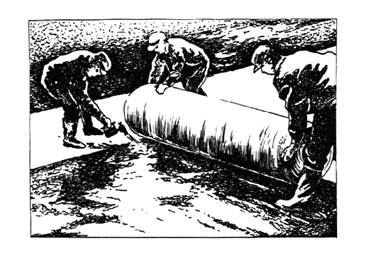

ДЕПАРТАМЕНТ СТРОИТЕЛЬСТВА
НАУЧНО-ТЕХНИЧЕСКОЕ УПРАВЛЕНИЕ
МОССТРОЙЛИЦЕНЗИЯ
ВЕДОМСТВЕННЫЕ
СТРОИТЕЛЬНЫЕ НОРМЫ
ИНСТРУКЦИЯ
по технологии строительства
внутриквартальных дорог
с применением материала дорнит
ВСН 30-96
МОСКВА-1996
Инструкция по технологии строительства внутриквартальных дорог с применениям материала дорнит разработана к. т. н В.М. Гольдиным, Л.В. Городецким. Р.И. Бега (НИИМосстрой), инженером ОАО "Мосинжстрой" Маркиным Б.В. при участии Ю.И. Столярова, к. т. н. В. Д. Фельдмана (Мосстройлицензия).
Инструкция обобщает накопленный за период с 1968 по 1995 г.г. опыт эксплуатации дорожных одежд на внутриквартальных дорогах, а также разработки НИИМосстроя, СоюзДОРНИИ, ЛиСИ и МАДИ.
Инструкция согласована с проектным институтом "Мосинжпроект", АО "Мосинжстрой" и трестом "Гордорстрой".
СОДЕРЖАНИЕ
|
Департамент строительства |
Ведомственные строительные нормы |
|
|
Инструкция по технологии строительства внутриквартальных дорог с применением материала дорнит |
ВСН 30-96 |
|
|
Научно-техническое управление |
1.1. Настоящая Инструкция распространяется на строительство постоянных и временных внутриквартальных дорог с применением материала дорнит в качестве конструктивного элемента дорожной одежды.
1.2. Дорнит применяется в виде прослойки на грунтах повышенной влажности с целью увеличения несущей способности земляного полотна, предотвращения заиливания дренирующих слоев дорожной одежды и повышения эффективности дренажей мелкого и глубокого заложения. Прослойка из дорнита позволяет на 15-25 см уменьшить толщину песчаного дренирующего слоя.
1.3. Прослойки из дорнита в конструкциях дорожных одежд выполняют следующие функции:
- воспринимают совместно с грунтовым основанием напряжения от транспортных нагрузок, распределяя и уменьшая при этом напряжения в земляном полотне; в результате уменьшается деформация покрытия и образование колеи;
- обеспечивают разделение слоев и предотвращают их перемешивание и заиливание;
- обладают водопроницаемостью и играют роль дренажа, осушая верхнюю зону переувлажненного основания.
|
Внесены |
УТВЕРЖДЕНЫ |
Дата введения в действие |
|
Научно-техническим управлением Департамента строительства |
||
|
"16" февраля 1996 г. |
1 апреля 1996 г. |
2.1. Дорнит, применяемый в дорожном строительстве, должен соответствовать требованиям ТУ 21-29-81-81 "Полотно иглопробивное для дорожного строительства - дорнит. Технические условия" по механической прочности, деформативности, фильтрационной способности, устойчивости к воздействиям биологических, химических и климатических факторов.
2.2. Для строительства постоянных и временных дорог применяют, главным образом, дорнит - тип Ф-2, изготовляемый пробивным способом из отходов синтетических волокон Московским производственным предприятием нетканых материалов по технологии, разработанной институтом ВНИИСтройполимер.
2.3. В таблице 2.1. приведены технические требования к дорниту.
Технические требования к дорниту
|
Наименование показателей |
Тип дорнита |
||
|
Ф-1 |
Ф-2 |
Ф-3 |
|
|
Прочность на разрыв, кН/ на 1 м ширины полотна |
10-25 |
7-10 |
3-10 |
|
Удлинение при разрыве, % |
10-80 |
60-100 |
60-100 |
|
Прочность на продавливание, кН |
400-500 |
300-350 |
200-250 |
|
Ширина полотнищ дорнита, не менее, м |
1,7 |
2,2 |
2,2 |
|
Длина в рулоне, м |
100 |
100 |
100 |
|
Водопоглощение, % |
600-700 |
600-700 |
600-700 |
|
Толщина дорнита, мм |
4±1,0 |
4±1,0 |
4±1,0 |
|
Коэффициент фильтрации уплотненного дорнита, не менее, м/сут |
25-30 |
30-40 |
30-40 |
2.4. Дорнит поставляют, как правило, в рулонах массой до 80 кг, с длиной полотна в рулоне не менее 40 м и шириной не менее 1,5 м. Исключение может составлять дорнит, применяемый в дренажах или для укрепления обочин. Рулоны перевязываются в 3-4 местах.
2.5. Дорнит не должен иметь разрывов и других нарушений сплошности. Ширина полотна не должна превышать 5 % и не более 5 см по ширине в сторону уменьшения среднего значения.
2.6. Дорнит шириной до 5000 мм может быть изготовлен в заводских условиях путем соединения двух полотен внахлестку. Прочность соединения должна быть не меньше прочности дорнита по ширине.
3.1. Прослойка из дорнита устраивается после окончания строительства подземных сооружений и коммуникаций в дорожном полотне и после уплотнения дорожного полотна до коэффициента уплотнения 0,98.
3.2. Технологический процесс укладки и засыпки дорнита состоит из следующих операций:
- подготовка поверхности грунта;
- укладка дорнита;
- устройство вышележащих слоев дорожной одежды.
3.3. Поверхность грунта планируют бульдозером или автогрейдером с целью выравнивания его и соблюдения проектного поперечного уклона.
3.4. Доставленные к месту производства работ рулоны дорнита распределяют по длине участка работ на расстоянии, кратном длине рулона.
Укладку дорнита начинают с низовой стороны. Вначале раскатывают рулон вдоль бортового камня или кромки проезжей части, затем с перекрытием швов - последующие рулоны.
На рис. 3.1 показана раскладка дорнита.

3.5. При раскатывании полотен дорнита производят разравнивание полотен во избежание образования складок и волн.
3.6. Полотнища в проектном положении закрепляют с помощью шпилек. Соединяют полотнища одним из следующих способов: внахлест, сваркой, сшиванием портативной машинкой, склеиванием водостойкими материалами, скреплением металлическими или пластмассовыми скобами.
3.7. В практике московского строительства рулоны дорнита раскатывались двумя-тремя рабочими вручную с перекрытием краев смежных рулонов на 10-20 см. В поперечном направлении полотна стыковались внахлестку. Смежные полосы дорнита соединялись П-образными креплениями из арматурной стали диаметром 3-5 мм и длиной 10-15 см, вбиваемыми в грунт через 2,0-2,5 м.
3.8. Отсыпку верхнего слоя дорожной одежды производят по способу "от себя" бульдозером. Уплотнение слоя производят сразу после его планировки до коэффициента уплотнения 0,98.
3.9. При строительстве постоянных дорог на переувлажненных грунтах применяется предусмотренная проектом конструкция, под которой по земляному полотну укладывается дорнит с уклоном в сторону продольного дренажа.
3.10. При устройстве продольного дренажа полотна дорнита укладываются вдоль стенок с обертыванием продольной трубчатой дрены. На рис. 3.2. представлена совмещенная конструкция дренирующего слоя и дренажа мелкого заложения с применением дорнита.
3.11. Временная дорога устраивается по трассе будущей постоянной дороги. Земляное полотно должно быть уплотнено до коэффициента уплотнения 0,98.
3.12. По уплотненному и выровненному земляному полотну укладывается слой песка толщиною до 10 см. Песок уплотняется до коэффициента уплотнения 0,98.
3.13. Рулоны дорнита раскатываются по песчаному основанию и скрепляются скобами, также, как и при строительстве постоянной дороги.
3.14. Для устройства покрытия временной дороги применяется известняковый щебень или щебень из гравия марки 600.
3.15. Щебеночные материалы доставляются на объект автосамосвалами, выгружаются на дорнит и распределяются бульдозерами способом "от себя".
3.16. Уплотнение щебня выполняется катками на пневматических шинах и с гладкими вальцами массой 5-15 т. Ориентировочное число проходов по одному следу 20-25.
3.17. Толщина щебеночного покрытия в плотном теле должна быть не менее 20 см.
3.18. С целью укрепления краевой полосы щебеночного покрытия устраиваются грунтовые обочины шириной не менее 0,5 м с уплотнением до коэффициента 0,98.
Полотно дорнита должно заходить в обочины или кюветы, устраиваемые вдоль временной дороги.
3.19. При строительстве внутриквартальных дорог с применением материала дорнит необходимо соблюдать правила техники безопасности при производстве дорожных работ и требования СНиП III-4-80 "Техника безопасности в строительстве". На рис. 3.3 представлена конструкция временной дороги шириной 3,5 м.
Рис. 3.2. Совмещенная конструкция дренирующего слоя и дренажа мелкого заложения с применением дорнита:
1 - дорожная одежда; 2 - песок Кф>Зм/сут.; 3 - текстильный синтетический
материал; 4 - пластмассовая,
асбестоцементная дрена,
либо трубофильтры без муфт
Рис. 3.3. Конструкция временной дороги шириной 3,5 м:
1 - щебеночное покрытие;
2 - дорнит тип 2; 3 - песчаное основание;
4 - земляное полотно
Примечание. Закрепление смежных полос дорнита производится скобами через 2,0-2,5 м
4.1. Качество работ проверяют после каждого законченного цикла работ; возведения насыпи; устройства корыта; укладки дорнита; соединения его полотнищ. Окончание работ каждой основной технологической операции оформляют актом на скрытые работы.
4.2. Пооперационно контролируют следующие характеристики:
- поперечный уклон земляного полотна;
- плотность готового земляного полотна;
- ровность корыта и плотность грунта в нем;
- качество применяемого дорнита;
- ровность раскладки дорнита;
- ширину перекрытия смежных полотнищ;
- шаг и прочность соединения полотен скобами;
- толщину и качество уплотнения песчаного дренирующего слоя над дорнитом.
4.3.Плотность земляного полотна должна быть не ниже Ку ³ 0,98-1,0. Рекомендуется контролировать плотность грунтов микрозондом, радиоизотопным прибором, плотномером-влагомером Ковалева и другими приборами.
4.4. Ровность земляного полотна контролируют через каждые 5-10м обычной рейкой. Допускаемые отклонения при устройстве корыта следующие: по ширине ± 0,05 м, отметке дна ± 0,03 м.
4.5. Ровность раскладки дорнита контролируют визуально. Не допускается наличие складок, бугров и т.д.
4.6. Ширину перекрытия смежных полотнищ назначают в зависимости от типа скрепления: при скреплении полотен скобами перекрытие принимают равным 10 см, а при сшивании - 5 см.
4.7. Качество сшивания смежных полотен проверяет лаборатория путем испытания на разрыв контрольных образцов.
Контроль соединения смежных полотен скобами заключается в соблюдении проектного шага забивки скоб и обеспечения целостности скрепляемых полотнищ. Шаг установки скоб назначают по расчету.
4.8. Приемку основания с прослойкой дорнита производят путем наружного осмотра с составлением акта на скрытые работы.
4.9. Контроль качества устройства песчаного слоя над дорнитом заключается в проверке толщины отсыпаемого слоя, коэффициента фильтрации песка и его уплотнения.
4.10. Толщину песчаного слоя над дорнитом принимают по расчету, но ее значение зависит также от способа технологии отсыпки слоя.
4.11. Контроль при устройстве вышележащих слоев от проектных размеров осуществляется мерной лентой и нивелированием.
4.12. При строительстве дорожных конструкций с применением дорнита необходимо строго соблюдать технические правила производства работ в соответствии с требованиями норм и правил техники безопасности СНиП III-4-80 "Техника безопасности в строительстве".
4.13. К работе по устройству дорожных конструкций с применением дорнита допускаются люди не моложе 18 лет, прошедшие медицинский осмотр, обученные по утвержденной программе безопасным методам работы, получившие удостворение о сдаче экзаменов и проинструктированные непосредственно на рабочем месте.
4.14. Все подготовительные и механизированные работы должны производиться под непосредственным руководством инженерно-технических работников, назначенных приказом.